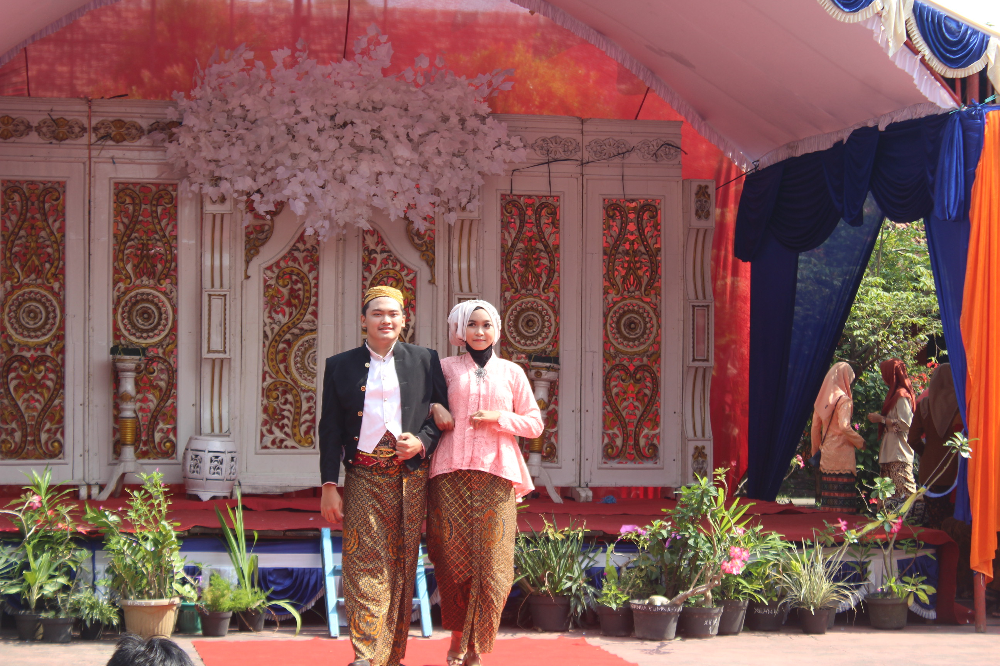
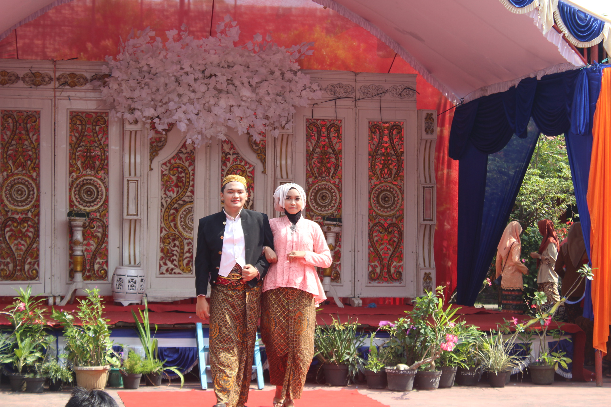

Overview
Hi, saya adalah calon web developer masa depan, saat ini sedang belajar HTML 5 dan CSS3. Semoga kedepannya saya bisa menjadi seorang yang professional.
(Amateur Web Developer)
Hi, saya adalah calon web developer masa depan, saat ini sedang belajar HTML 5 dan CSS3. Semoga kedepannya saya bisa menjadi seorang yang professional.
Menjadi Pengurus OSIS selama di SMA |
Selama di SMA, saya menjadi pengurus OSIS selama 2 periode. Di periode yang kedua alhamdulillah saya diberi amanah menjadi Ketua Sie Bidang PA & KS (Persepsi Apresiasi & Kreasi Seni). |


 
